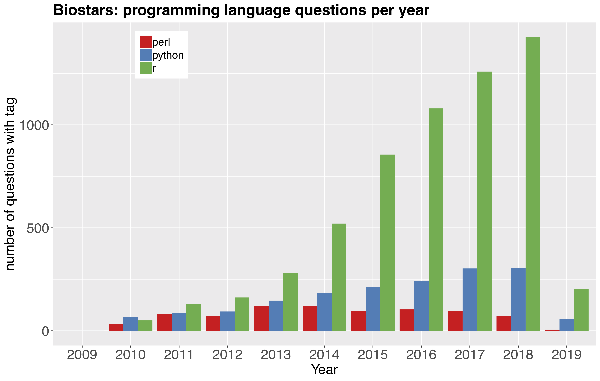
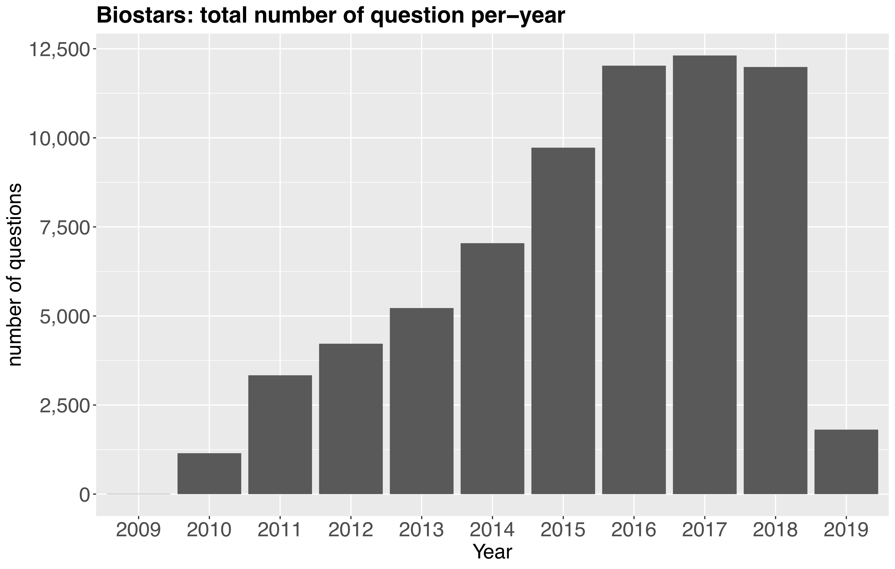
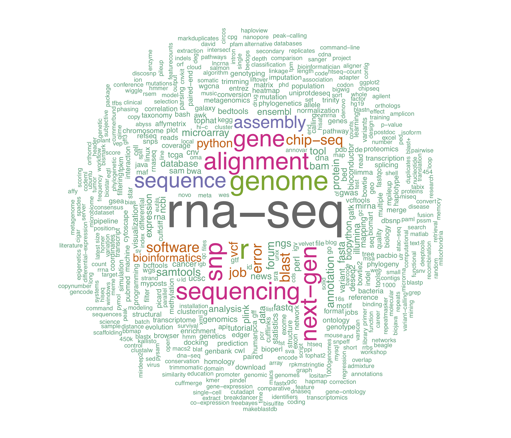

Biostars, (https://www.biostars.org/) is a QA forum for bioinformatics related stuff, much like stack overflow. I have to admit and be grateful to this site and the community as it’s played (& still playing) an important role since I started Bioinformatics after Masters/MS to this day. Today, I’m a PhD student in Bioinformatics, and I frequently get help from this site whenever I’m stuck with problems. Thank you Biostars.
There are many questions on this site starting from how to get started with bioinformatics to latest techs in sequencing world. The data scientist in me was curious to look at the data this site accumulated over the years (2009 - 2019). In this blog post, I will look at some of the questions I’ve been interested about Bioinformatics.
Here are the few question I will answer in this blog post
-
Which programming language is most used in Bioinformatics in last ~10 years
-
Growing importance of Bioinformatics reflected by total number of questions per year in last ~10 years
-
Frequency of topics discussed on this site
I used web-scraping approach to scrape questions and associated tags and engineered some of the features per each question. Code to reproduce the analysis is available here (NOTE: Data is scraped on 23/02/2019 there might be slight changes when it is reproduced as new threads are opened after 23rd Feb, 2019).
Bioinformatics & programming languages
Here, I took all tags for each question and summarised the number of questions per-year with following tags, R, Python & Perl.

The rapid increase in use of R in Bioinformatics is not surprising given the large community of users, visualization libraries and most importantly Bioconductor project. Use of Python is increasing but relatively slow compared to R, I guess the major reason for this might be lack of a resource such as Bioconductor.
Importance of Bioinformatics in research
Following graph shows the number of questions appeared on Biostars per year. This reflects the number of researchers getting into Bioinformatics and the growing importance of high throughput analysis in basic sciences and disease research.

Frequency of topics discussed
What’s the most discussed topic on Biostars? Or what’s the topic on which most bioinformaticians get stuck? Following word cloud shows the frequency of each tag associated with all questions from last ~ 10 years.

RNA-seq it is. This is one of the revolutionary sequencing technology to get informations on transcriptomic changes depending the contexts but it does seem like it is also one of the most difficult topic in terms of computational analysis. Don’t even get me started on single-cell technology.
There are more interesting questions I would like to answer with this resource whose code requires a more expensive computational resource than my laptop. I will update this blog post as I do additional analysis.